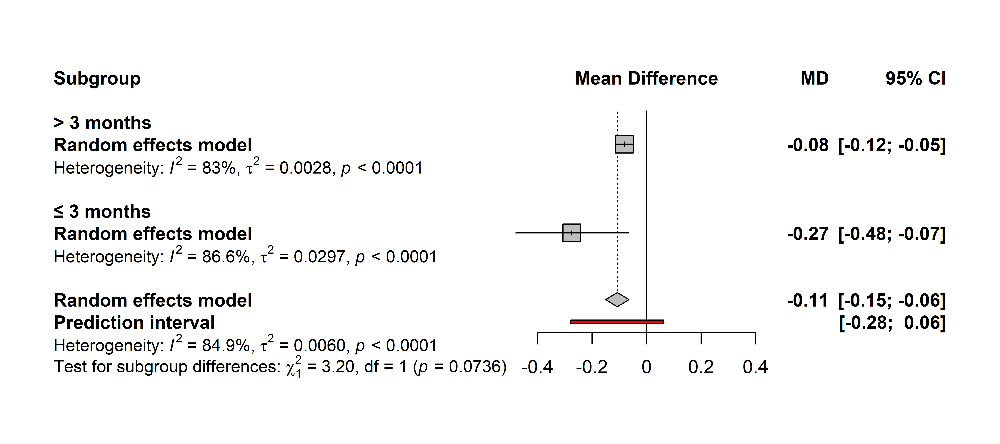

# Cargar paquetes
pacman::p_load(
meta,
metadat,
janitor,
tidyverse
)
# Cargar/preparar datos
datos_md <- dat.poole2003 |>
clean_names() |>
mutate(au_anio = paste(author, year, sep = "_"))
# Ajustar modelo
mod_md <- metacont(
n.e = ne,
mean.e = me,
sd.e = se,
n.c = nc,
mean.c = mc,
sd.c = sc,
studlab = au_anio,
data = datos_md,
common = FALSE,
prediction = TRUE
)Análisis de moderadores
Tamara Ricardo ![]()
Introducción
Anteriormente abordamos el ajuste de modelos de efectos fijos y aleatorios, la representación gráfica de los resultados mediante forest plots y la estimación de la heterogeneidad estadística. Ahora, nos enfocaremos en distintas estrategias para controlar la heterogeneidad observada y evaluar la robustez de los modelos ajustados.
El análisis de moderadores permite explorar fuentes de heterogeneidad entre los estudios incluidos en un meta-análisis. Se asume que los estudios no provienen de una misma población base sino de distintas subpoblaciones o subgrupos, cada una con su propio efecto verdadero. Puede realizarse incorporando como moderador una variable categórica (análisis de subgrupos) o una variable numérica (metarregresión).
Este enfoque contribuye a:
Evaluar hipótesis sobre variaciones en la magnitud del estimador de efecto entre estudios.
Interpretar diferencias observadas en los resultados.
Para evitar sesgos de selección, es fundamental definir las variables moderadoras durante la extracción de datos en la revisión sistemática.
Análisis de sugbgrupos
En el análisis de subgrupos se asume que los estudios no provienen de una población única, sino de distintos subgrupos poblacionales, cada uno con su propio efecto verdadero.
El análisis consta de dos etapas:
Estimación del efecto dentro de cada subgrupo.
Prueba estadística para evaluar diferencias entre subgrupos.
Para evaluar el efecto de una variable categórica con meta, ajustamos el modelo de meta-análisis incluyendo el argumento subgroup = var, donde var es el nombre de una variable del dataset.
Retomemos el ejemplo del capítulo anterior para diferencia de medias estandarizadas:
Incorporamos la durationcomo posible fuente de heterogeneidad:
mod_sg <- update(mod_md, subgroup = duration)Veamos la salida del modelo:
mod_sgNumber of studies: k = 17
Number of observations: o = 4034 (o.e = 2043, o.c = 1991)
MD 95% CI z p-value
Random effects model -0.1076 [-0.1504; -0.0647] -4.92 < 0.0001
Prediction interval [-0.2783; 0.0631]
Quantifying heterogeneity (with 95% CIs):
tau^2 = 0.0060 [0.0028; 0.0245]; tau = 0.0775 [0.0533; 0.1565]
I^2 = 84.9% [77.2%; 90.0%]; H = 2.57 [2.09; 3.16]
Test of heterogeneity:
Q d.f. p-value
105.78 16 < 0.0001
Results for subgroups (random effects model):
k MD 95% CI tau^2 tau Q I^2
duration = ≤ 3 months 4 -0.2742 [-0.4819; -0.0665] 0.0297 0.1724 22.43 86.6%
duration = > 3 months 13 -0.0821 [-0.1163; -0.0478] 0.0028 0.0527 70.79 83.0%
Test for subgroup differences (random effects model):
Q d.f. p-value
Between groups 3.20 1 0.0736
Details of meta-analysis methods:
- Inverse variance method
- Restricted maximum-likelihood estimator for tau^2
- Q-Profile method for confidence interval of tau^2 and tau
- Calculation of I^2 based on Q
- Prediction interval based on t-distribution (df = 16)El análisis de subgrupos ajusta un modelo de meta-análisis para cada nivel de la variable categórica, con sus estimadores de efecto (\(95\%~IC\)) e indicadores de heterogeneidad, además del estimador global (\(95\%~IC\)) y sus indicadores de heterogeneidad. En base a esto, la salida del modelo muestra dos nuevos paneles:
Results for subgroups (random effects model): muestra los resultados para cada categoría del moderador, incluyendo:Identificador de las categorías del moderador.
k: número de estudios en la categoría/subgrupo.events: prevalencia en la categoría/subgrupo.95%-CI: intervalo de confianza al 95% para la prevalencia en la categoría/subgrupo.tau^2: varianza dentro de la categoría/subgrupo.tau: desvío estándar en la categoría/subgrupo.Q: estadístico Q de Cochran para la categoría/subgrupo.I^2: porcentaje de heterogeneidad observado en la categoría/subgrupo.
Test for subgroup differences (random effects model): prueba de hipótesis para detectar diferencias significativas entre subgrupos.
En este ejemplo, observamos que no existen diferencias estadísticamente significativas entre escalas de medición (p = 0,074). Podemos acceder al p-valor de la prueba de moderadores con el siguiente código:
mod_sg$pval.Q.b.random[1] 0.07355117Podemos visualizar los resultados del análisis de moderadores incorporando el argumento layout = "subgroup" a la función forest():
- 1
-
layout = "subgroup": muestra los estimadores de efecto para cada subgrupo y el estimador global, omitiendo los resultados de los estudios individuales. - 2
-
sort.subgroup: ordena alfabéticamente las categorías de la variable moderadora. - 3
-
calcwidth.subgroup: ajusta el ancho del forest plot para que se muestren correctamente las etiquetas de las categorías/subgrupos. - 4
-
calcwidth.tests: ajusta el ancho del forest plot para que se muestren correctamente las etiquetas del test de hipótesis de diferencias en las categorías/subgrupos. - 5
-
print.subgroup.name: muestra la etiqueta de la variable moderadora delante de cada categoría (TRUE, por defecto) o lo oculta (FALSE).

Cuando graficamos un análisis de subgrupos, el argumento col.diamond modifica el color del estimador global y de los estimadores por subgrupo. El argumento col.square no tiene efecto en este caso.
El análisis de subgrupos puede interpretarse como un enfoque intermedio entre el modelo de efectos fijos y el de efectos aleatorios. Se asume que existe heterogeneidad entre los subgrupos, y que cada nivel de la variable moderadora posee su propio efecto verdadero. Sin embargo, los subgrupos analizados (por ejemplo, sexo biológico, grupo etario, país de origen, tipo de prueba diagnóstica) se consideran categorías fijas, definidas a priori.
Entre sus principales limitaciones se encuentran:
Si la heterogeneidad es elevada, los intervalos de confianza pueden ser amplios y superponerse, incluso cuando existen diferencias estadísticamente significativas entre subgrupos.
El tamaño muestral por subgrupo es menor que para el estimador global, lo que reduce la potencia estadística.
La ausencia de significación estadística no implica equivalencia entre los grupos, ya que el análisis no permite evaluar relaciones causales.
Metarregresión
La metarregresión intenta predecir el estimador de efecto global en base a una o más variables independientes. Por lo general, se usa para evaluar el efecto de una variable continua (por ejemplo, el año de publicación) sobre la magnitud del efecto global. Sin embargo, también pueden incluirse moderadores categóricos, obteniendo resultados idénticos a los del análisis de subgrupos.
Ajustaremos la metarregresión con la función metareg(), incluyendo el año de publicación (year) como moderador en el argumento formula:
mod_year <- metareg(mod_md, formula = ~year, intercept = TRUE)La salida del modelo muestra lo siguiente:
summary(mod_year)
Mixed-Effects Model (k = 17; tau^2 estimator: REML)
logLik deviance AIC BIC AICc
11.1752 -22.3504 -16.3504 -14.2262 -14.1686
tau^2 (estimated amount of residual heterogeneity): 0.0052 (SE = 0.0026)
tau (square root of estimated tau^2 value): 0.0724
I^2 (residual heterogeneity / unaccounted variability): 87.38%
H^2 (unaccounted variability / sampling variability): 7.93
R^2 (amount of heterogeneity accounted for): 12.84%
Test for Residual Heterogeneity:
QE(df = 15) = 63.3405, p-val < .0001
Test of Moderators (coefficient 2):
QM(df = 1) = 1.5199, p-val = 0.2176
Model Results:
estimate se zval pval ci.lb ci.ub
intrcpt -7.6948 6.1553 -1.2501 0.2113 -19.7590 4.3693
year 0.0038 0.0031 1.2329 0.2176 -0.0023 0.0099
---
Signif. codes: 0 '***' 0.001 '**' 0.01 '*' 0.05 '.' 0.1 ' ' 1Mixed-Effects Model: reporta los cambios en heterogeneidad al añadir el moderador continuo y (según el estimador) la bondad de ajuste (\(R^2\)) del modelo.Model resultspresenta los coeficientes del modelo para el intercepto y el moderador, con su significancia estadística y \(95\%~IC\).
En nuestro ejemplo, los resultados muestran que el efecto del año de publicación no es estadísticamente significativo (p = 0,218).
Bubble plots
Los resultados de la metarregresión con predictores numéricos se visualizan usando bubble plots. Estos gráficos representan en el eje \(X\) el valor del moderador continuo y en el eje \(Y\) el efecto estimado para cada estudio. Cada burbuja representa un estudio individual, y su tamaño es proporcional al peso del estudio (generalmente inversamente proporcional a la varianza). Además, el gráfico incluye una línea de regresión con su intervalo de confianza del 95%, permitiendo visualizar la tendencia general.
La función bubble() genera este gráfico de forma rápida:
Metarregresión múltiple
Los modelos de metarregresión permiten evaluar el efecto de dos o más variables independientes, que pueden ser continuas, categóricas o una combinación de ambas. Al igual que en los modelos de regresión convencional, se pueden especificar efectos aditivos (independientes) o multiplicativos (interacción).
A menos que exista una hipótesis específica de interacción, se recomienda utilizar un modelo aditivo. Los modelos con interacción aumentan la complejidad, el riesgo de sobreajuste, la posibilidad de colinealidad entre variables moderadoras y los problemas de convergencia, especialmente cuando el número de estudios es reducido o hay muchos niveles en las variables categóricas.
mod_multi <- metareg(mod_md, formula = ~ year + duration, intercept = TRUE)
mod_multi
Mixed-Effects Model (k = 17; tau^2 estimator: REML)
tau^2 (estimated amount of residual heterogeneity): 0.0045 (SE = 0.0024)
tau (square root of estimated tau^2 value): 0.0674
I^2 (residual heterogeneity / unaccounted variability): 85.21%
H^2 (unaccounted variability / sampling variability): 6.76
R^2 (amount of heterogeneity accounted for): 24.41%
Test for Residual Heterogeneity:
QE(df = 14) = 59.8211, p-val < .0001
Test of Moderators (coefficients 2:3):
QM(df = 2) = 8.6043, p-val = 0.0135
Model Results:
estimate se zval pval ci.lb ci.ub
intrcpt -7.4981 5.8083 -1.2909 0.1967 -18.8822 3.8860
year 0.0037 0.0029 1.2765 0.2018 -0.0020 0.0095
duration≤ 3 months -0.1447 0.0554 -2.6126 0.0090 -0.2533 -0.0362 **
---
Signif. codes: 0 '***' 0.001 '**' 0.01 '*' 0.05 '.' 0.1 ' ' 1En este caso, la significancia de duration cambia al añadir el efecto del año de publicación.